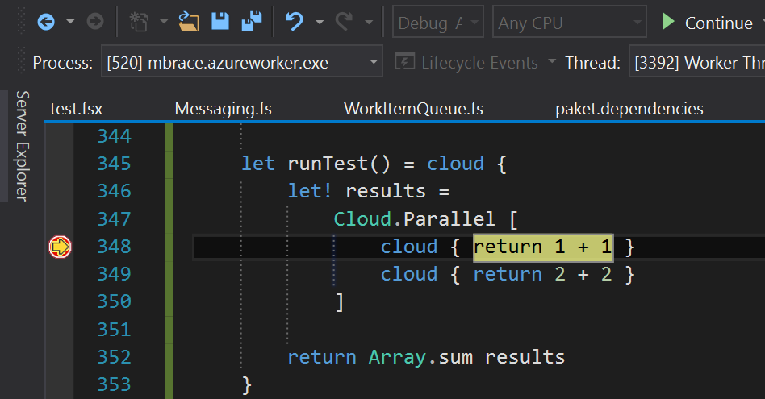

namespace System
namespace System.Threading
namespace System.Threading.Tasks
namespace System.Net
namespace MBrace
namespace Microsoft.FSharp.Core
namespace MBrace.Flow
namespace Microsoft.FSharp
namespace Microsoft.FSharp.Control
module GoogleCharts
from XPlot
from XPlot
val defaultof<'T> : 'T
Full name: Microsoft.FSharp.Core.Operators.Unchecked.defaultof
Full name: Microsoft.FSharp.Core.Operators.Unchecked.defaultof
namespace MBrace.Runtime
val f : (unit -> unit)
static member ThreadPool.QueueUserWorkItem : f:(unit -> unit) -> unit
ThreadPool.QueueUserWorkItem(callBack: WaitCallback) : bool
ThreadPool.QueueUserWorkItem(callBack: WaitCallback, state: obj) : bool
ThreadPool.QueueUserWorkItem(callBack: WaitCallback) : bool
ThreadPool.QueueUserWorkItem(callBack: WaitCallback, state: obj) : bool
val zip : list1:'T1 list -> list2:'T2 list -> ('T1 * 'T2) list
Full name: Microsoft.FSharp.Collections.List.zip
Full name: Microsoft.FSharp.Collections.List.zip
val map : mapping:('T -> 'U) -> list:'T list -> 'U list
Full name: Microsoft.FSharp.Collections.List.map
Full name: Microsoft.FSharp.Collections.List.map
val c : int
val d : int
static member Chart.Column : data:seq<#seq<'K * 'V>> * ?Labels:seq<string> * ?Options:Options -> GoogleChart (requires 'K :> key and 'V :> value)
static member Chart.Column : data:seq<#key * #value> * ?Labels:seq<string> * ?Options:Options -> GoogleChart
static member Chart.Column : data:seq<#key * #value> * ?Labels:seq<string> * ?Options:Options -> GoogleChart
static member Chart.WithXTitle : xTitle:string -> chart:GoogleChart -> GoogleChart
static member Chart.WithYTitle : yTitle:string -> chart:GoogleChart -> GoogleChart
static member Chart.WithSize : size:(int * int) -> chart:GoogleChart -> GoogleChart
static member Chart.Show : chart:GoogleChart -> GoogleChart
val t : float
property GoogleChart.Html: string
static member Chart.Bar : data:seq<#seq<'K * 'V>> * ?Labels:seq<string> * ?Options:Options -> GoogleChart (requires 'K :> key and 'V :> value)
static member Chart.Bar : data:seq<#key * #value> * ?Labels:seq<string> * ?Options:Options -> GoogleChart
static member Chart.Bar : data:seq<#key * #value> * ?Labels:seq<string> * ?Options:Options -> GoogleChart
val x : 'a
val y : 'b
val k : (IContext -> 'T [] -> unit)
abstract member IContext.Resolve : unit -> 'TResource
val n : int ref
val zeroCreate : count:int -> 'T []
Full name: Microsoft.FSharp.Collections.Array.zeroCreate
Full name: Microsoft.FSharp.Collections.Array.zeroCreate
property Array.Length: int
val i : int
abstract member IScheduler.Enqueue : (IContext -> unit) -> unit
val t : 'T
Interlocked.Increment(location: byref<int64>) : int64
Interlocked.Increment(location: byref<int>) : int
Interlocked.Increment(location: byref<int>) : int
val iteri : action:(int -> 'T -> unit) -> array:'T [] -> unit
Full name: Microsoft.FSharp.Collections.Array.iteri
Full name: Microsoft.FSharp.Collections.Array.iteri
val k : (IContext -> bool -> unit)
abstract member IFileSystem.FileExists : path:string -> bool
val k : (IContext -> 'TResource -> unit)
type IScheduler =
interface
abstract member Enqueue : ('a0 -> unit) -> unit
end
Full name: index.IScheduler
interface
abstract member Enqueue : ('a0 -> unit) -> unit
end
Full name: index.IScheduler
abstract member IScheduler.Enqueue : ('a0 -> unit) -> unit
Full name: index.IScheduler.Enqueue
Full name: index.IScheduler.Enqueue
type unit = Unit
Full name: Microsoft.FSharp.Core.unit
Full name: Microsoft.FSharp.Core.unit
TaskCompletionSource.SetResult(result: 'T) : unit
property TaskCompletionSource.Task: Task<'T>
property Task.Result: 'T
Multiple items
type Random =
new : unit -> Random + 1 overload
member Next : unit -> int + 2 overloads
member NextBytes : buffer:byte[] -> unit
member NextDouble : unit -> float
Full name: System.Random
--------------------
Random() : unit
Random(Seed: int) : unit
type Random =
new : unit -> Random + 1 overload
member Next : unit -> int + 2 overloads
member NextBytes : buffer:byte[] -> unit
member NextDouble : unit -> float
Full name: System.Random
--------------------
Random() : unit
Random(Seed: int) : unit
val x : int
val x : 'T
val f : Cloud<'T>
val g : ('T -> Cloud<'S>)
val n : int
val c : string
namespace System.Reflection
type Assembly =
member CodeBase : string
member CreateInstance : typeName:string -> obj + 2 overloads
member CustomAttributes : IEnumerable<CustomAttributeData>
member DefinedTypes : IEnumerable<TypeInfo>
member EntryPoint : MethodInfo
member Equals : o:obj -> bool
member EscapedCodeBase : string
member Evidence : Evidence
member ExportedTypes : IEnumerable<Type>
member FullName : string
...
Full name: System.Reflection.Assembly
member CodeBase : string
member CreateInstance : typeName:string -> obj + 2 overloads
member CustomAttributes : IEnumerable<CustomAttributeData>
member DefinedTypes : IEnumerable<TypeInfo>
member EntryPoint : MethodInfo
member Equals : o:obj -> bool
member EscapedCodeBase : string
member Evidence : Evidence
member ExportedTypes : IEnumerable<Type>
member FullName : string
...
Full name: System.Reflection.Assembly
A dive into Cloud<'T>
Common Misconceptions
- "MBrace is an F# only framework"
- "MBrace is based on F# quotations"
In the Past
1: 2: 3: 4: |
|
Now
1: 2: 3: |
|
Now
1: 2: 3: |
|
No interpretation or expression tree compilation!

How does it all work?
MBrace.Core
A continuation-based library fororchestrating distributed .NET code
Cloud<'T> = Async<'T> + context
1: 2: |
|
1:
|
|
1: 2: |
|
1: 2: 3: 4: 5: 6: 7: 8: 9: 10: 11: |
|
Async vs. Cloud
- Async has hard-wired dependency on .NET thread pool
- Cloud scheduler parameterized by context
- Cloud parameterizable by other resources
1: 2: 3: |
|
1: 2: 3: 4: 5: |
|
1: 2: 3: |
|
1: 2: |
|
A thread pool scheduler
1: 2: 3: 4: 5: 6: 7: 8: 9: 10: 11: 12: 13: 14: 15: |
|
How does one implement a distributed scheduler?
1: 2: 3: |
|
Require capacity to serialize arbitrary lambdas
What is the runtime representation of an F# lambda?
The code
1: 2: 3: |
|
Compiles to
1: 2: 3: 4: 5: 6: 7: 8: 9: 10: 11: 12: 13: 14: 15: |
|
Remarks
- F# lambdas are instances of compiler generated classes
- that inherit the abstract class
FSharpFunc<'T,'U> - Lambda body found in the
Invokemethod override - Captured variables represented as instance fields
What does a serialized lambda look like?
1: 2: 3: |
|
1:
|
|
1: 2: 3: 4: 5: 6: 7: 8: 9: 10: 11: 12: 13: 14: 15: |
|
Continuations can be extremely complex objects
1: 2: 3: 4: 5: |
|
1: 2: 3: 4: 5: 6: 7: 8: 9: 10: |
|
Serializes to
MBrace uses FsPickler for serialization
FsPickler
- Messaging Serializer
- Multi-format
- Support most "serializable" .NET object graphs
- Fast
- Pickler combinators
But, there's a catch!
A .NET process cannot deserialize a lambda unless
it already knows about its corresponding class definition.
This holds trivially in "closed" distributed systems,
where every node contains a fixed set of assemblies.
Not so in "dynamic" systems, where code can
be generated at runtime or introduced after deployment.
Vagabond
- Runtime assembly dependency management library
- Lets .NET applications execute arbitrary code
- Incremental accumulation of client-defined code and data
- Built-in support for F# and C# REPLs
In essense, Vagabond is two methods:
1: 2: |
|
Example: Thunk Execution as a Service

Implementing Azure Scheduler
- FsPickler/Vagabond for serialization
- Use Blob Storage for storing new assemblies
- Use Service Bus for queueing jobs
Implementing Azure Scheduler
1: 2: 3: 4: 5: 6: 7: |
|
MBrace.Runtime
- Runtime foundation based on FsPickler/Vagabond.
- Common semantics/architecture for distributed runtimes.
- Easy runtime authoring.
Benefiting from FsPickler/Vagabond
- Akka.Net, Prajna, Mobius
- Your project!